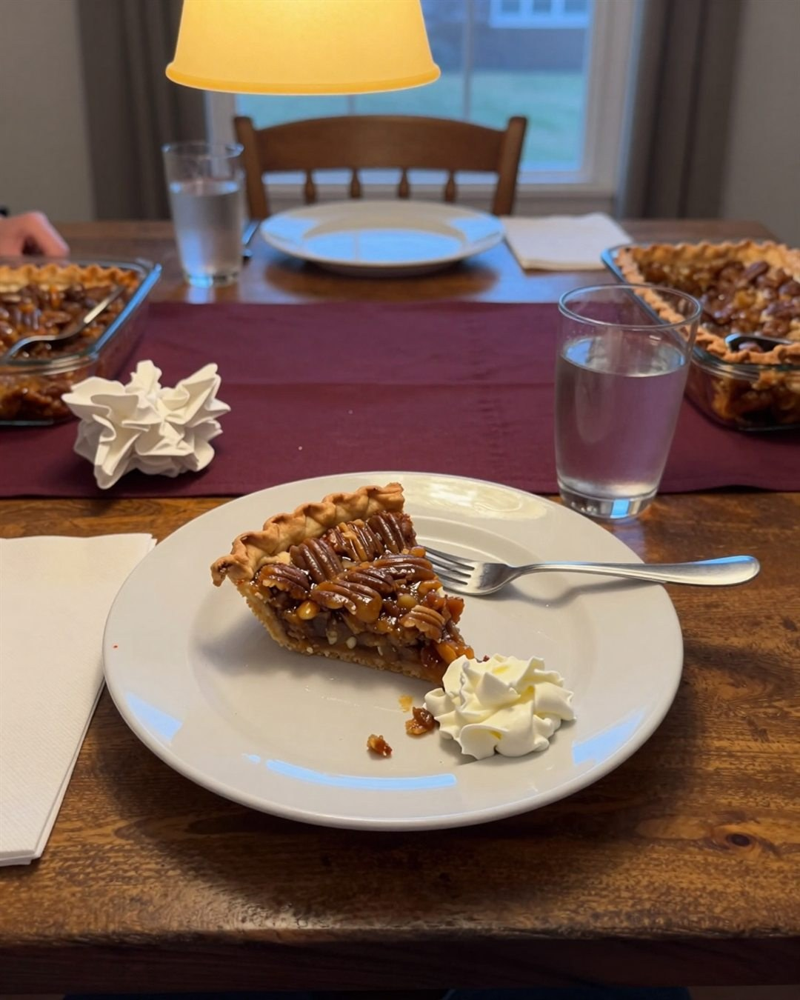

Three years ago my sister-in-law wrote four words under a photo of me. This morning she texted me five questions.
She deleted the four words before breakfast. The five questions she meant. Here is every one, exactly what I answered, and the nine-second video she sent back.

Three years ago · 1:14 a.m.
My phone lit up on the nightstand.
A comment under a photo from my niece Kayla's wedding. Table 9. Me, from the side, laughing at the best man's speech. Somebody's cousin had tagged me.
The comment was from my husband's sister. Carol.
"wait is that Linda??"
Four words. Two question marks. She deleted it before breakfast.
I had already read it forty times.
We never spoke about it. Not once in three years. Carol kept bringing her green bean casserole to my house, and I kept being the one who holds the phone. "Let me take it!"
Then came yesterday.
Thanksgiving, 4:40 p.m.
Carol is 60 and she reads people the way other people read fine print. She watched me all through dinner.
She watched me leave half a slice of pecan pie on my plate.

She watched my husband, Mark, lift his phone. And she watched me not say "Let me take it." I stood next to my grandson Owen, and I stayed there.
Carol said nothing. In our family, Carol saying nothing is the loudest sound there is.
She hugged me at the door one second too long and left with her casserole dish.
This morning · Black Friday · 6:52 a.m.
My phone lit up. Same name as three years ago.
"I have 5 questions. Don't call me. Type."
I answered all five. Real terms, real dollars. Then she went silent for hours.
At 11:38 she sent me a nine-second video from a grocery store parking lot.
She's in her car, phone up, with the look she gets when a waiter is wrong about the bill.
"Okay, Linda. You win. Two minutes."
She taps her phone. Her eyebrows go up.
"Oh."
That's where the video stops.
I'm going to tell you what the "Oh" was. But Carol asked her questions first, so you get them in her order. Word for word, typos included.
In a hurry? Skip to the same 2-minute questionnaire Carol took ▸
1. "what is it REALLY. not the brochure"
I typed three answers and deleted all three.
Then I told her something I had never told anyone in Mark's family. I told her about 9:12.
Every night the stove clock said 9:12, and a voice started. Not hunger. A voice.
There's pie left. You were good all day. Just a sliver. Nobody will know.
I argued with it for an hour a night, for years. Some nights I won. Most nights I was standing in the fridge light with a fork.
I told her about Denise, my book-club friend. Nine years of splitting a plate of lemon bars. "I will if you will." Denise is the one who gave the voice its name: food noise. And she's the one who said the sentence that undid me in a parking lot:
"It was never willpower, Lin. Something finally turned the noise down."
Carol sent one word: "and"
What I typed back
"It's a doctor-guided GLP-1 program, Carol. Yes. That. The medication everyone at church whispers about. Done properly."
You answer a two-minute questionnaire on your phone. A licensed US clinician reviews your history and prescribes only if it's right for you. The consultation is included.
If it's a yes, it's delivered to your door the next day.
And it isn't only the medication. Glycine, B12 and B6 are built in, to protect muscle and ease side effects. There's an app with a daily plan and a food log. You can message a clinician whenever you want. And a body scanner tracks fat and muscle every week.
"Every diet I ever tried asked me to out-shout the voice," I typed. "This is the first thing that went after the voice."
See if you qualify (2 minutes) ▸
Three dots. For a long time.
Then: "huh."
Then: "2." And I knew exactly what was coming, because it's the first thing I asked, too.
2. "whats the catch. what does it COST. a number"
I didn't type anything.
I sent her a photo I took in September, in a grocery store parking lot. I had never shown it to a living soul. Not even Mark.
 See the real price ▸
See the real price ▸The points app: $239.
The meal-kit boxes: $1,104.
The gym: $1,080. I went eleven times.
The shakes, the "metabolism" capsules, the 21-day reset, the online coach: $1,889.
I added it up on the back of that envelope and cried so hard a woman knocked on my car window to ask if I was okay.
$4,312
"That's what three years of cheap cost me," I typed. "About $120 a month. For nothing."
Then I gave her the number she asked for.
$199 a month on the 3-month plan. It's regular $299.
And the catch? I spent two evenings hunting for it. A sign-up fee. A pushy salesman. A cancellation process designed by the devil.
Cancel anytime. No fees. That's the whole paragraph.
See today's price and whether you qualify ▸
Carol was quiet for six minutes. Then:
"you went to that gym 11 TIMES??"
"I counted," I wrote.
"3."
Question three is the one that kept my own thumb hovering for a week.
3. "what if they say no"
That's the real one, isn't it. Carol has been told no by a lot of things. So have I.
I told her the truth: not everyone qualifies.
You answer the questions. It takes two minutes. If it's a no, you're told straight away, and you pay nothing.
"A no costs you two minutes," I typed. "I paid a gym $1,080 to find out less."
I was braced for a no myself. I did mine at the kitchen table with my coffee going cold and my speech already written: see, I knew it.
I got a yes. The box was on my doorstep the next day.
Two minutes, and you know either way: find out if it's a yes ▸
"and if its a yes"
"Then you're where I was ten weeks ago."
She didn't answer that. She sent question four instead. In capital letters.
4. "WHAT IF I HATE IT. or it works 2 wks then quits like everything else"
Two questions pretending to be one. Very Carol.
If you hate it: cancel anytime, no fees. And there's a 90-day money-back guarantee.
"Ninety days, Carol. The gym gave me a tote bag."
If it quits like everything else: I told her what happened to me instead.
Day 4, I left half a sandwich on a plate. I am 54 and I had never once done that. I stared at it like it belonged to someone else.
Week 2, 9:12 came and went. Silence. I only noticed the next morning, the way you notice the fridge has stopped humming.
And there's an app with a plan for every day, a food log, and a real person to message any time. Not a voice note sent twice. A person.
But the thing that stops me quitting is on my bathroom floor.
 Get the free scanner ▸
Get the free scanner ▸A body scanner. It tracks fat and muscle as two separate lines, every week. So on a slow week I can see why it's slow. A slow week used to be the week I quit. Every single time. It's on the envelope.
"so thats why the pie"
"That's why the pie."
"5."
Then nothing. Four full minutes of nothing. Whatever five was, she was having trouble typing it.
5. "why now. why not january like a normal person"
I had two answers. I gave her the practical one first.
Today is Black Friday. That body scanner, the thing I step on every Monday, is a $350 value. Today it comes free with every plan.
That's a today thing. It is not a January thing.
Check if you qualify while the scanner is free ▸
Then I gave her the true one.
"Because I said January for three years, Carol. Look at the envelope. The gym was a January."
"And because you didn't start asking this morning. You started asking at 4:40 yesterday, over my pie plate."
Delivered. Read.
No reply.
7:40. 8:30. 9:15. Nothing. I unloaded the dishwasher and decided I'd pushed her too hard. That I'd lost her.
At 10:02 my phone lit up. It wasn't a question.
The one that wasn't a question
"that comment. kaylas wedding. i know you saw it"
I sat down on the stairs.
"i wasnt laughing at you. i looked at that picture and thought, thats going to be me"
"then i thought, it already is. so i deleted it"
Three years. Three years I carried those four words around like a stone in my coat pocket, sure they were about me.
They were about her.
"been arguing with my own kitchen every night since before you married my brother"
I typed the only thing I could think of: "What time is yours?"
"8:45. soon as the dishwasher starts"
Carol has the voice, too. She's had it for decades, and she has never told one person.
If there's a time on your stove clock, too: take the 2-minute questionnaire ▸
Then she went quiet again. Until 11:38, and nine seconds of video from a parking lot.
"Oh."
You've seen the video. "Okay, Linda. You win. Two minutes." The tap. The eyebrows. "Oh."
I called her. She let it ring, of course. Don't call me. Type.
So I typed: "OH WHAT."
Three dots. Gone. Three dots again.
"it asked what ive already tried"
"linda. i ran out of fingers"
"nobody ever asked me that. they just sold me the next thing"
That was the "Oh." Not a price. Not a pitch. A question, about her.
Eleven minutes later:
"it said yes"
"comes tomorrow. i had my whole speech ready for a no"
And then the one that got me:
"send me that envelope again. im doing mine. im at $600 and im still in 2019"
See if it's a yes for you, like it was for Carol ▸
1:14, again
This afternoon Mark posted the picture from yesterday. Me and Owen, next to the pie. Me, in a photograph. He tagged me.
At 1:14 p.m. my phone lit up on the kitchen counter. I swear on my mother's gravy boat: 1:14.
Carol Brennan commented on a photo of you.
My stomach still dropped. Three years of habit.
I opened it.
"that's Linda."
Two words. No question marks.
It's still there. She hasn't deleted it.
If those were your five questions
Then you already have my answers. All of them fit on one screen:
- Doctor-guided GLP-1 program, prescribed only if a licensed US clinician says it's right for you
- Glycine, B12 and B6 built in · app with daily plan · unlimited clinician messages
- $199/month on the 3-month plan (regular $299), consultation included, FSA/HSA eligible
- Cancel anytime, no fees · 90-day money-back guarantee
- Black Friday: the body scanner ($350 value) is free with every plan